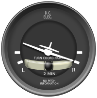

Digitix08's Testsite
P20 Th
Dacă ați avut ocazia sa zburați cu avionul ați putut observa că în timpul unui viraj nu vă deplasați nici spre stânga nici spre dreapta. Asta pentru că forța centrifugă este compensată de ruliul (înclinarea laterală) avionului.
Răspunsul corect este B [la postarea 19].
Piloții învață să controleze un viraj cu ajutorul indicatorului de viraj și
glisadă. Acesta indică înclinarea corectă - fără derapaj spre exterior sau
alunecare spre interiorul virajului. Practic, menținând "bila la mijloc"
pasagerii vor rămâne cu... fundul pe scaune 
https://images.app.goo.gl/Auheix3L2frGZNN76
